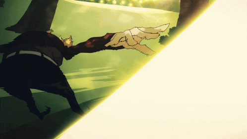

Vocês me conhecem por vários nomes: Indy, Kawaii, Ingri, Isis, moranguinho, chapeulzinho vermelho, a garota de cosplay, a menina do just dance...
É sou bastante conhecida. Porém é melhor eu me apresentar direito para os novatos.

Minha Formação (o que eu faço da vida)
Eu sou formanada em análise e desenvolvimento de sistema na grande e maravilhosa FATEC da minha cidade (Não confudem com a ETEC pelo amor de Deus).
Agora, estou estudando comércio exterior ainda na FATEC e design gráfico na Anhanguera (e sim estou fazendo duas faculdade ao mesmo tempo... Como? EU NÃO SEI KKK)
Só agora que estou começando a focar mais na parte de marketing e design que sempre amei, pelas minhas experiências de trabalho.
Desde de pequena eu sempre demonstrei ser proativa nessa área. Eu viva editando vídeos, fotos e criação conteúdo como cartazes, aviso. Tanto que isso me fez crescer mais no meus trabalhos.
Eu tenho até um portfólio se quiserem ver. É só clicar aqui.
Porém ainda estou desempregada, mas continuo fazendo no privado para algumas pessoas, como editar fotos, criar convites virtuais (esse tipo de coisa). E se você for uma pessoa que precisa de alguém que conheça esse mundo do marketing. POR FAVOR ME CONTRATA! Eu trabalhei durante um ano dentro do setor de marketing da faculdade e estou totalmente disposta a empresa. Então... ME DÊ ESSA CHANCE POR FAVOR! HEHE.
Então entrem em contato comigo se quiserem algum auxiliar, ou um trabalho, ou a possibilidade de um emprego pra mim é só ir contatos
E é isso, hehe.

Meus hobbies e gostos UwU
Como eu disse antes eu sou um otaku e amante na cultura oriental, então já sabem o que eu amo não é?

Desde pequena eu sempre amava a cultura oriental até falava que eu iria me casar com um oriental (se tiver algum ai e quiser... Eu estou disponível. ♡). Tanto que meus primeiros animes que entrou na minha vida foram Pucca (eu era extremamente viciada), pokémon, bakugan, super onze, Hi Hi Puffy Amiyumi e as séries como poweranger e Ryukendo.
Tanto que na escola quando coloca "Japão" no meio da conversa, todo mundo me apontava. E eu sinceramente tenho orgulho disso. Só no finalzinho do fundamental que comecei a fase dos doramas e k-pop. Entretando eu acredito que esse lado é de família, já que por parte de pai sempre assistiam animes ou filmes orientais, só não eram tão viciados como agora e graças a mim, influenciei todo mundo.
Meu pai sempre amava os raizes como yu yu hakusho (seu favorito), super campeões, Jaspion e ultraman. Com o tempo ele focou em animes mais de ação, luta ou o que aparecer completo dublados e de fácil acesso, ao lado da minha mãe (mas ela prefere os doramas). Meu irmão gosta mais de fantasia ou romance como tensei shitara slime datta ken, Tokidoki Bosotto Russia-go de Dereru Tonari no Alya-san, Ijiranaide, Nagatoro-san. Geralmente ele tá mais lendo mangá do que assistindo. E minha querida irmãzinha bem... Clica aqui e você verá (ela implorou por uma página, então os gostos dela vão está lá)
Voltando a mim, devido a tudo isso deixou a minha marca registrada e me fez entrar no ramo dos desenhos que também é coisa de família. Sim, todo mundo desenho principalmente minha mãe. Bem, além dos animes e da arte dos desenhos também danço (just dance), canto (no coral da faculdade), toco (mais ou menos violão, teclado e flauta doce), leio (atualmente to na novel de re:zero e percy jackson) e por fim eu sou gamer né então curto uns joguinhos ai (fnaf, brawlstar, hok, mobile legends, undertale, roblox, fnf, yttd, ib,...).
Pera não posso esquecer do principal, sou uma escritora amadora (acho que posso me chamar assim...) então eu escrevo várias histórias sabe apesar querer focar em alguns em especifico, dependendo do dia eu volto neles. Por isso vai ter uma página única só deles hehe. E tô pensando em criar um jogo. Se eu vou conseguir? Não faço ideia, mas tentarei.

Bem, em resumo. Sou uma faz tudo da arte, gamer, escritora amante de toda cultura oriental, coisas fofas, vermelho, doces, músicas, terror... cara cancei, vamos pro próximo bloco.
Eu sou famosa e posso provar! E alias tenho até um canal no youtube
Eu realmente sou famosa. Porque é tanta gente que me conhece que nem eu lembro o nome delas (foi mal ai kk...);
Porém o que eu quero falar é que eu tenho até uma noticia sobre mim e isso foi totalmente sem querer...
Em muitas cidades do interior de SP que possuem TVTEM existia o famoso "TEMGAMES" que é um campeonato de videogame e evento de eSports realizado pela TVTEM. E claro que eu não podia perder, já que geramente (pelo menos aqui na cidade) são apenas dois jogos: justdance e o FIFA.
Justamente na primeira vez que primeira vez que participo começaram a entrevistar os jogadores e como sou POBRE eu treino pelo youtube mesmo, totalmente normal... ou era o que eu achava. ATÉ APARECER UMA PAGINA MINHA SÓ PORQUE VENCI A PRIMEIRA PARTIDA!!!

Faz oito anos desde essa página. Fiquei em 6º lugar e na outra em 4º (mas não lembro qual das edições) ainda tenho o cracha do evento. Tava tão nervosa e com o calor só piorava, mas ter me divertido e ter até uma pagina de reconhecimento foi único pra mim. Pena que infelizmente depois de mais duas edições (uma que eu participei em seguida). Em 2019 foi o último já que não sei o por que, mas pararam de conduzir o evento, infelizmente.
Depois de um tempo começou a surgir os eventos geek adicionando as competições de just dance e que muitas pessoas que jogaram contra mim no TEMGAMES estavam lá. Porventura infelizmente (pelo menos desse ano), não teve e tenho medo de tiraram algo único que amo, mesmo com as músicas se tornando cada vez mais difícies...
Na verdade eu queria muito que voltasse, pois graças ao TEMGAMES me tornei alguém mais aberta do que eu já sou sabe? Tirando a minha vergonha e me animando sempre com as coisas que eu faço sem se importar com que as pessoas dizem como os cosplay. Porque o importante é se divertir não? Mas fazer o que né?
Bem esse é o link da minha notícia chocante. Lembro de quando fui na escola e começou a chegar um alvoroço de gente querendo conversar comigo. Dizendo: "Cara, eu vi você na TV, tu tem coragem." / "Você arrasou lá, como entrou lá?" / "Você não tem vergonha? Eu não consigo dançar daquela forma"... Foi uma doideira, mas me alegrava até... Como eu disse, graças ao vários eventos me deixaram ser a pessoa que sou hoje e um deles foi o TEMGAMES. Aqui o link da página:

Agora meu canal do youtube...

Eu tinha na realidade dois canais no youtube, um que era o "O jornal da Família" que caiu o canal pelas normas do youtube INFELIZMENTE e um outro de animes chamado "Stargirl AMV".
O "Jornal da Família" foi um canal que eu fazia junto com meus irmãos e isso, foi quando eu era nova tipo a 8 anos atrás por ai. Era literalmente um jornal, tinha uma introdução e os quadros que dividia entre os meus irmãos como "Comerciais estrangeiros", "Os sinais", "O quadro dos irmãos", etc. Porém, a gente colocava muita noticiais sobre sinais do fim do mundo e com isso tinha muitos direitos autorais, mas no começo o youtube avisa sobre as músicas e ele removia sabe? Porém teve alguém que começou a denunciar dizendo que tinha coisas imorais dentro vídeo...
O mais legal que o vídeo era único, eu editava no celular que travava pra caramba, tinha vezes que a qualidade era horrível que parecia o próprio minecraft kkkkk. E o melhor quadro que tinhamos era o "Dublando pra você" Nele as pessoas pediam e a gente dublava. Tanto que teve uma vez que fiz um vídeo para minha prima de aniversário e comecei a dublar a abertura da novela "A Usurpadora" e até fiz uma parte da cena da novela, saudades...
Eu tenho a página do facebook do canal com as intros. Se tiverem curiosos CLIQUE AQUI :3

O StargirlAMV bem, pra quem não sabe AMV (Anime Music Video) são vídeos que sincronizam cenas de animes com músicas, ou seja edits. Como eu que ficava responsavel por editar os vídeos do jornal da família e tava viciada em assistir AMV para procurar novos animes para assistir. No começo pode ver que a qualidade dos vídeos eram bem... ( ͡❛ ⍨ ͡❛ ) porventura depois começou a melhorar. Até tenho o canal ativo, mas faz uns 6 anos que eu não posto e depois de um tempo meu irmão como um robby começou a fazer edits no Adobe fex que ainda tenho que aprender a usar.
O que eu fiquei impressionada com o canal é que teve uns comentários gringos e tipo fiquei bem feliz, pois juro que não imaginava isso.

Aqui está o link de um dos meus vídeos que tenho mais orgulho, mas tem vídeo de novela mexicana, TWD (The walking Dead), FNAF (Five Night at Freddy), etc.
Minhas coisas favoritas
Bem, pra não ficar tão grande vou fazer top 5 que nem a minha irmã, ai vocês decidem o que vão querer ver. O bom que ao mesmo tempo, vai ser algumas recomendações e acho que vocês vão gostar hehe ᕙ(`▿´)ᕗ. E cada imagem tem o link para você ver:
Meus top 5 Jogos favoritos (͠≖ ͜ʖ͠≖)👌

Eu sempre amei jogos com finais alternativos, mas graças a um dos meus best Paulo pude ter uma bela experiência. COMO EU SOFRI DE DESESPERO JOGANDO, MAS AMEI CADA MOMENTO. SURTEI DE VÁRIAS MANEIRAS E RECOMENDO!!!!
Until Dawn é um jogo de terror de sobrevivência onde oito amigos se reúnem em um chalé isolado na montanha, um ano após o desaparecimento de duas irmãs do grupo, revivendo um pesadelo onde precisam enfrentar seus medos e escolhas morais para sobreviver à noite de um assassino mascarado e de ameaças sobrenaturais, com o destino de cada personagem dependendo das decisões do jogador, que podem levar a mortes chocantes ou à sobrevivência de todos até o amanhecer.
É um jogo para que você vai decidir quem vai sobreviver nessa história, tem tensão principalmente no modo de não mover o controle. para PlayStation 5, PlayStation 4 e Microsoft Windows.
Eu não sou a melhor, mas digamos que sou um poquinho viciada... E bom os dois são os mesmo mecanisno, mas prefiro o Hok que tenho mais skins e personagens. E INFORMAÇÃO MEUS MAIN SÃO NO HOK: ANGELA, XIAOQIAO, HEINO, AUGRAN E DYADIA / MB: NANA, ANGELA, CICI, CHANG'E E ALICE.
A sinopse de Honor of Kings foca em um universo de fantasia épico, inspirado na literatura chinesa clássica, onde heróis lendários como Mulan (amo usar ela kkk) e Guan Yu lutam em batalhas intensas 5v5 como MOBAs, defendendo seus reinos em uma guerra ancestral, com o objetivo de destruir o cristal inimigo, tudo isso enquanto exploram histórias profundas e diversos modos de jogo.
Bem, eu só não coloco LoL porque joguei poucas vezes e tirei do meu pc da xuxa... Quem sabe algum dia eu volto kkkk.
Esse foi o jogo que eu amo e chorei horrores pelas escolhas horriveis que tem que fazer né Sara (protagonista). SAUDADES DO MEU QUERIDO SOU AHHHHHHHH!!!!
É um jogo de mistério e terror onde a protagonista, Sara Chidouin, e mais 9 pessoas são sequestradas e forçadas a participar de um "Jogo da Maioria", um jogo de vida ou morte onde devem votar para escolher quem será sacrificado, com regras cruéis que levam a mortes e reviravoltas, enquanto tentam descobrir quem é o misterioso Mestre e como escapar, explorando cenários e resolvendo quebra-cabeças.
O jogo lembra danganronpa. Ainda não tá completo e to esperando a atualizando a um tempo, mas é top pra caramba além do estilo em 2d.
Esse jogo sou um "POUQUINHO" viciada pelo roblox, mesmo com as música de mais de 4 teclados que amo todos os mods sério!!! E esse tem mobile agora.
Um jogo de ritmo e batalha onde precisa pressionar as setas no tempo certo para vencer. Friday Night Funkin' gira em torno do personagem principal, conhecido como Boyfriend, um aspirante a rapper que tenta conquistar o coração de sua amada, Girlfriend. Para isso, ele deve provar seu valor em batalhas de rap e canto contra uma série de oponentes peculiares, incluindo os pais ex-estrelas do rock e pop de Girlfriend, que desaprovam o relacionamento. Além disso, por ser um código aberto existe vários mod: Fnaf, hello kitty, hatsune miku, undertale, bob esponja, etc.
Minhas musicas favoritas são: Marx (mod Sunday), Boogieman (mod Twinsomnia), Scuffle (mod Ghostwins), Bazinga (mod Fever) esse mod eu amo tudo principalmente a nova atualização e Marx (mod Mami (madoka mahou soujo)).
Ainda penso em quem sabe fazer um mod único, mas preciso pensar e vê se eu consigo hehe.
Esse jogo eu amo e não me canso de jogar. Uma nostalgia única que amo muito.
Crash Bandicoot precisa impedir o Dr. Neo Cortex de dominar a Ilha Wumpa usando uma nova substância mágica chamada Mojo para transformar os animais em monstros gigantes (Titãs). A novidade é que Crash pode "hackear" esses Titãs e usar seus poderes para lutar contra outros inimigos e progredir, enquanto resgata sua irmã Coco e derrota os planos malignos de Cortex, que envolvem a construção de um robô colossal para destruir tudo.
Tem também o Crash Twinsanity que eu sempre dou risada pela briga dos dois. E bom é do PlayStation2 então é bem nostalgico.
O jogo é difícil, mas não é impossível e agora com minha mesa digitalizadora to amando ^^.
OSU! É um jogo de ritmo gratuito e popular onde os jogadores usam o mouse ou uma mesa digitalizadora para clicar em círculos, deslizar por sliders e girar spinners no ritmo da música, sendo baseado em jogos como Osu! Tatakae! Ouendan e Elite Beat Agents, com milhões de músicas criadas pela comunidade. Ele é conhecido pela sua jogabilidade viciante e pela grande comunidade, oferecendo diferentes modos de jogo e modos de dificuldade.
Vou deixar até o link para vocês baixarem se quiser Baixem aqui! tem vários tipos de músicas só aproveitar. ^^
Meus top 5 Animes favoritos (҂◡̀_◡́)ᕤ

Preciso comentar? Amo tudo o design, a história o prota, os personagens as rotas alternativas (sim tem isso), as músicas AHHHHHHHHHH!!! Cara é incrível podem falar o que for do Subaru ou anime que eu vou defender até o fim!!!
Bem esse anime isekai conta a história do Subaru Natsuki, um garoto comum que foi transportado para um mundo de fantasia medieval e que descobre (da pior maneira) que tem a habilidade "Retorno pela Morte" após ser brutalmente assassinado, sendo forçado a reviver e reviver o mesmo período de tempo até conseguir mudar o destino trágico e salvar uma linda elfa de cabelos prateados e seus novos amigos, enfrentando dor, desespero e violência constante até achar um final feliz para sua história.
O criador maravilhoso (Tappei Nagatsuki) que criou essa obra de arte nas novel criou até rotas alternativas se o nosso protagonista tomasse outras decisões baseadas nos pecados capitais. Cara tem magia, bruxas, arcebispos pecaminosos, dragão, cavaleiros, mistério, sobrevivência, bestas demoniacas, traição... Gente o anime é tudo de bom e tem dublado.

Pela influência e insistência eu conheci essa obra de arte, mesmo com um pouco de dificuldade no começo e eu amei cada minuto do anime.
A franquia Fate (geralmente) foca na Guerra do Santo Graal na cidade de Fuyuki, onde sete magos denominado como "Mestres" invocam espíritos heroicos (Servos) para lutar até a morte pelo cálice que realiza desejos. Em especifico no Stranger fake, Uma organização sediada nos EUA, com magos distintos da Associação de Magos de Londres, usou dados dessa Guerra para planejar seu próprio ritual. Setenta anos depois, eles usaram a cidade de Snowfield como Terra Sagrada para sua própria Guerra do Santo Graal. No entanto, eles não conseguiram replicar com sucesso todos os aspectos do ritual, resultando em uma mera imitação que perdeu a classe Saber e permitiu a invocação de Servos estranhos devido à definição imprecisa de um "herói".
Bem, eu sei que a franquia de fate é imensa, mas dê uma chance. A animação é linda, os personagens são incríveis, mas recomendo começar pelo fate/zero que é o ínicio de tudo.

Sempre amei heróis seja da marvel ou da DC e quando apareceu esse anime fiquei fascinada e acompanhei sempre desde o começo. Se você gosta de heróis talvez você curte.
Em um mundo onde 80% das pessoas possuiem individualidade (poderes). Vamos ver a história de Izuku Midoriya, um garoto que sem sorte nasceu sem poderes, mas que sonha em ser o maior herói, inspirado pelo Nº1, All Might. Até que ele herda o poder dele e entra na Academia U.A. voltado a treinar, para ser um herói enfrentando vilões e descobrindo os desafios do heroísmo, superação e amizade.
Bem, eu sei que tem bastante temporada, mas dê uma chance nem que seja para ler o mangá. Os vilões são incríveis, o design é top além disso tem um novo anime antes do Midoriya entrar na academia chamado vigilante que tem um design único lembrando as hq de heróis e tem dublado.

Esse anime veio sem querer no meu pote aleatório de animes e tive a chance de conhecer essa maravilha principalmente meu amdo Kuze Hibiki.
Já imaginou ter um site que prevê a morte de seus amigos e até mesmo salvar sua vida de um ataque alienigena? Bizarro né. Bem nesse anime conta a história de Kuze hibiki com seu melhor amigo Daichi Shijima (tem a Nita também) que arrasta ele para se inscreverem no novo app chamado "Nicaea" que supostamente mandam vídeos futuros de suas mortes. Porém o que temia era verdade e em seus últimos suspiros uma nova oportunidade ressurge forçando-os a lutar contra as criaturas alienigenas chamadas "Septentriones" ganhando a habilidade de invocar demônios e lutar pela sobrevivência da humanidade, descobrindo segredos sombrios e dilemas morais sobre o destino.
Na verdade esse anime é baseado no jogo do mesmo nome que tem um mangá que sinceramente não muita muita coisa apenas os personagens em si. O anime é curto que lembra digimon até. Na realidade esse anime tá em divisa com o Owari no Seraph que é um anime curto e ótimo de vampiro e armas demoniacas.

Esse anime a maioria conhece pela Yuno Gasai a psicopata de cabelo rosa e esse tem dois finais diferentes no anime.
Um garoto solitário chamado Yukiteru Amano, que anota tudo em seu celular e com seu unico amigos imaginários, um deus chamado Deus Ex Machina. Até que seu amigo teve um ideia e faz Yuki participar de um jogo com outros 12 participantes o "Jogo do Diário", onde todos recebem celulares que preveem o futuro e devem lutar até a morte para que o vencedor se torne o novo Deus do Tempo e Espaço. Onde do nada aparece uma garota misteriosa com um amor doentio da Yuno Gasai que promete viver lutando ao lando de Yuki.
Na realidade eu conheci esse anime com o rap do mirai nikki do 7 minutoz. Tirando o prota que é um INÚTIL PRA CARAMBA (NÃO SEI PORQUE FALAM QUE O SUBARU É ASSIM SENDO QUE ELE É PIOR)... O anime é top pela tensão que traz pelo mistério e luta pela sobrevivência. E como falei antes, esse anime tem dois finais, um com o anime original e outro na OVA, E EU PREFIRO MUITO O FINAL DA OVA!!! Mas é curto então assistem. ^^

Esse anime... Eu choro, grito, dou gargalhada e amo tudo do começo ao fim e eu que influenciei minha irmãzinha hehe ^^
Jibaku Shounen Hanako-kun é sobre Nene Yashiro, uma estudante que busca um romance e acaba invocando o Sétimo Mistério da Academia Kamome, o fantasma travesso Hanako-kun, que vive no banheiro feminino; em vez de uma garota, ela encontra um menino, tornando-se sua assistente para manter o equilíbrio entre os mundos humano e espiritual, lidando com outros mistérios escolares e descobrindo segredos sombrios. Não é totalmente de terror, possui um romance fofo e muita comédia hehe.
O anime é único além de ter um belo pscicopata o Yugi ahhhhhhh, sinceramente o anime me surpreende cada vez mais... Parece um anime fofinho, mas não é pra tanto.

Sinceramente esse anime fica na divida entre Mirai Nikki, tenho até o mangá... Sou extremamente apaixonada.
Noragami conta a história de Yato, um deus menor e desconhecido que sonha em ter milhões de seguidores e um santuário, mas vive como um "deus de entrega" (faz-tudo) por apenas 5 ienes, fazendo trabalhos estranhos pela cidade para ganhar fama e dinheiro. Sua vida vira de cabeça para baixo quando ele conhece Hiyori Iki, uma garota que o salva de ser atropelado por um ônibus, mas acaba se machucando e tendo sua alma separada do corpo, ficando presa entre o mundo dos vivos e dos mortos, conectada a Yato. Juntos, e com o novo Shinki (arma divina) de Yato, o jovem Yukine, eles embarcam em aventuras, combatem Ayakashis (espíritos malignos) e exploram o mundo espiritual, enquanto Yato tenta realizar seu grande sonho de se tornar um deus respeitado.
É um anime curto e para completa vou recomendar mais 4 animes que estão um pouco abaixo deles como mais alguns bonus: Tokyo Ghoul (terror, suspense e ação), Kakegurui (drama, escolar, mistério), Another (terror, mistério e sobrenatural) e Classroom of the Elite (escolar, suspense e drama)
Meus top 5 filmes favoritos (em geral) (ㆆ_ㆆ)
Eu prefiro mais filmes de terror e suspense, mas vou colocar em geral para vocês verem os meus gostos diferenciados. dessa vez não está exatamente na ordem dos melhores é só os que eu gosto mesmo. ;v

Dá saga do Anakin Skywalker, esse é o meu favorito, principalmente da luta entre mestre X padawan.
Durante as Guerras Clônicas, que estão em pleno andamento, as diferenças entre o Conselho Jedi e o Chanceler Palpatine tornam-se cada vez mais evidentes. Anakin Skywalker, um talentoso, porém conflituoso, Cavaleiro Jedi, mantém um laço de lealdade com o Chanceler, ao mesmo tempo em que luta para proteger seu casamento secreto com Padmé Amidala e lida com visões perturbadoras sobre o futuro dela. Desprezado em certa medida pelo Conselho Jedi, Anakin é progressivamente seduzido a se aproximar cada vez mais do Lado Negro se tornando o famoso Darth Vader.
Bem óbviamente que dessa saga logo vem império contra-ataca. Um outro clássico que amo.

Agora com um romance temos essa maravilha que sempre choro. E ainda não superei esse final...
Conta a história de Louisa "Lou" Clark, uma garota simples e cheia de vida, que precisa de um novo emprego e acaba sendo contratada para cuidar de Will Traynor, um jovem rico e inteligente que se tornou tetraplégico após um acidente e perdeu a vontade de viver, tornando-se cínico e depressivo, com um plano sombrio para acabar com sua vida, e a relação improvável deles se desenvolve em um romance comovente enquanto Lou tenta mostrar a Will a beleza de continuar vivendo, mas precisa lidar com o fato de que ele tem um objetivo diferente para o seu futuro.
Na realidade acho que amo esse filme porque me vejo bem parecida coma Louisa, sabe assim expontânea, energética, que é bem esforçada a ponto de não desistir por nada e lutar por ele. Tentando ser mais verdadeira como um livro aberto para as pessoas. Até pra ganhar uma meia assim eu ficarei bem bobinha... É preciso encontrar alguém logo hehe.
Eu sei o que vão dizer, mas tanto eu como meu irmão amamos filmes com essa extética de filmagem como VHS, amizade desfeita, Host,...
Logo após se mudarem para uma nova casa, Katie e Micah ficam intrigados com o que parece ser uma presença sobrenatural que está agindo sobre o lugar. O casal decide capturar o possível fenômeno em vídeo, mas nenhum deles estava preparado para os acontecimentos que se seguem.
Tirando o último filme (ente próximo) que não tem nenhuma ligação com os outros 6 filmes. O filme é top, até o Atividade Paranormal em Tóquio que é top. Eu ia colocar o filme Marcas da maldição que me deixou com medo até... bagulho doido. Então recomendo os dois.

EU SEI TODAS AS FRASES DE COR!!! Sou um "pouquinho" viciada em lilo e stitch. Se tivesse eu teria tudo, caderno, roupa, tudo.
Conta a história de Lilo, uma garotinha havaiana solitária, que adota um "cachorro" azul e caótico de um abrigo, sem saber que ele é o Experimento 626, um alienígena genético perigoso em fuga da galáxia, e juntos eles descobrem o verdadeiro significado de família, ou "ohana", enquanto fogem de seus perseguidores e a irmã de Lilo, Nani, tenta mantê-las juntas.
Eu sempre os filmes da disney e Lilo e Stitch não foge disso. Sobre o filme (2025) claro que mudou muita coisa, mas tem partes nostálgica do desenho e o Stitch está lindo hehe. Eu não só recomendo o desenho, mas sim a série (com as outras experiências) e os outros dois filmes (Lilo e Stitch 2 e leroy & stitch) e uma curiosidade que recomendo, mas tem um anime que seria a continuação do desenho onde o Stitch viaja pro espaço, mas sua nave falha e ele fica preso no japão com uma nova garota a Yuna.

Eu amo a marvel, tudo é incrível e nessa guerra eu amei de verdade (sempre fiquei do lado do homem de ferro).
Se passa após os eventos de Vingadores: Era de Ultron, onde um incidente com os Vingadores causa danos colaterais, levando o governo a propor os Acordos de Sokovia, um registro e supervisão para super-humanos. Isso divide os Vingadores: de um lado, o Capitão América defende a liberdade dos heróis, sem interferência governamental, enquanto o Homem de Ferro apoia a supervisão, buscando responsabilização. A tensão aumenta quando o Soldado Invernal é acusado de um atentado, forçando Steve a protegê-lo, e Tony Stark se une ao governo para caçá-lo, dividindo a equipe e levando a um confronto épico entre os dois lados.
Amo os filmes do homem-aranha, vingadores é tudo incrível e as séries não fica para trás. Tenho que ver para assistir os outros filmes da Marvel, mas ainda bem que tenho um best que sempre me deixa informada com os filmes hehe né Pontes. ;v
Meus top 5 séries favoritas (tirando os doramas e séries animadas) (ง︡'-'︠)ง

Amo essa série, claro que mudaram certas coisas como nerfar os poderes da Alisson, mas tirando isso eu amo essa sério principal o Cinco ♥
The Umbrella Academy é sobre uma família disfuncional de super-heróis, filhos adotivos de um bilionário excêntrico que os treinou para salvar o mundo, mas eles se separam na vida adulta; no entanto, se reúnem após a morte do pai, apenas para descobrir que um deles, o Número Cinco, retornou do futuro para avisá-los sobre um apocalipse iminente, forçando-os a superar seus traumas e diferenças para impedir o fim do mundo, frequentemente viajando no tempo e enfrentando ameaças temporais.
Ou seja, essa série é uma mistura de super-heróis e viagem no tempo. Tem um pouco de comédia, muita ação e paradoxo. Maravilhoso!

Meu anti-herói favorito. Amo tudo nele, as metaforas, o jeito... Tudo e vocês perceberam que eu gosto de ficção cientifica relacionada ao tempo e espaço né? kkkk
Acompanha uma versão alternativa do Deus da Trapaça após ele roubar o Tesseract em Vingadores: Ultimato, sendo capturado pela Autoridade de Variação Temporal (AVT). Forçado a ajudar a AVT a consertar a linha do tempo, Loki embarca em aventuras no tempo e espaço, caçando variantes de si mesmo, como Sylvie, e descobrindo segredos sobre a própria AVT e o multiverso, com a trama evoluindo para uma batalha pela alma da organização.
Ação, emoção, plot, além das outras variáveis do Loki, simplesmente absolute cinema. Tudo maravilhoso e gênial e o final chorei horrores.

Minha heroina favorita. Amoooo e fiquei totalmente chocada assistindo a série que doideira.
WandaVision acompanha Wanda Maximoff e Visão em uma tranquila cidade suburbana, onde eles vivem como um casal comum, atravessando diferentes décadas que lembram programas clássicos de televisão. Cada episódio apresenta um cotidiano aparentemente perfeito, com situações típicas de uma vida doméstica idealizada. No entanto, pequenos detalhes fora do lugar começam a surgir, levantando dúvidas sobre a realidade daquele mundo e sobre o que realmente está acontecendo ao redor do casal. Aos poucos, a história constrói um clima de estranhamento e curiosidade, convidando o espectador a questionar o que é real e o que está sendo cuidadosamente encenado.
No começo eu não tava entendo, mas depois as coisas começam a se encaixar e a série fica totalmente top. Realmente uma das melhores séries que eu já assistir além de contemplar com o filme Doutor Estranho no Multiverso da Loucura. Além dessa série ela fica entre a divisa com a Agatha Desde Sempre que é outra série ótima que amo.

Quem ai não gosta dessa série maravilhosa do mundo invertido?
Uma série de ficção científica e terror ambientada nos anos 80, que começa com o misterioso desaparecimento do jovem Will Byers em Hawkins, Indiana, levando sua mãe, o chefe de polícia e seus amigos a descobrirem segredos do governo, experimentos secretos e uma dimensão paralela assustadora, o "Mundo Invertido", com uma garotinha com poderes (Onze) no centro de tudo, enquanto lutam contra forças sobrenaturais.
Essa série é incrível, simplesmente absolute cinema, deixando você preso para maratonar direto. É sinistro, misterioso, doido. Nem tenho palavras para descrever essa maravilha hehe.
Amo séries que cada capitulo é uma história e foi dessa série que me fez eu escrever "O diário de terror".
Diário de Horrores é uma série antológica de horror disponível na Netflix em que cada episódio traz uma história diferente e inquietante, explorando magia negra, encontros sobrenaturais, tecnologia fora de controle e outros mistérios sombrios. Todos os contos são apresentados por uma figura mascarada conhecida como “O Curioso”, que reúne essas narrativas assustadoras e misteriosas para o espectador.
O curioso, dizem que ele coleciona histórias estranhas. E se você ouvir o assobio dele, sabe
que uma coisa arrepiante vai se revelar. Cuidado, porque você nunca sabe se realmente existe alguma coisa lá fora aguardando
nas sombras... Essa série lembra muito
Black Mirror e
Love, death +robots
que são séries que eu recomendo. Muito também. Tem alguns capitulos sem graças, mas tem outros que são top.
ESSA SÉRIE É SINISTRA PRA CARAMBA. MUITO DOIDA E FORTE QUE SENTE ATÉ UM ARREPIO... É uma série de terror que acompanha uma família negra que, em busca de uma vida melhor, se muda para um bairro
suburbano predominantemente branco nos Estados Unidos da década de 1950. O que deveria ser um recomeço logo se transforma
em um pesadelo, à medida que a família passa a enfrentar hostilidade crescente, tensões raciais explícitas e acontecimentos
perturbadores dentro e fora de casa. Conforme a pressão psicológica aumenta, forças ameaçadoras — humanas e não humanas —
começam a se manifestar, revelando que o verdadeiro horror pode estar tanto nas pessoas quanto no que se esconde nas sombras
do lar.
Ela tem um ar dos filmes
Corra e
Nós
que são terror que retrata o rascismo e realmente dá até um arrepio maior... E são os melhores que assisti também.
Além desses eu ainda recomendo a série
Lovecraft Country que é mistura de mistério, terror e sobrenatura e
Origem
que tem muitos mistério não revelados e essa tá disponível na globoplay dublado.

Meus top 5 doramas favoritos ≧◠‿◠≦
Esse só apareceu por causa do meu amigo Josh que me apresentou e fiquei viciada. Obrigada Josh-chan. ^^ Ah esse dorama tem completo no youtube. 0_0
A River Runs Through It (O Curso da Vida) acompanha Xia Xiaoju, uma estudante impulsiva que inicia uma nova fase escolar e acaba se envolvendo em situações inesperadas, incluindo um acidente marcante em que, por engano, dispara fogos de artifício em Cheng Lang, um garoto reservado que passa a fazer parte importante de sua vida. Enquanto tenta se adaptar à escola e às novas amizades, Xiaoju acredita estar apaixonada por Lu Shiyi, gentil e popular, sem perceber que outra pessoa nutre sentimentos silenciosos por ela. Entre confusões, amadurecimento e laços que se transformam, o dorama retrata as incertezas e emoções da juventude.
Esse anime é lindo e engraçado. Eu me identifico muito com a prota por ser lerda, boba e até um pouquinho impulsiva quando trata os sentimentos hehe. Além disso o lindo Lu Shiyi QUERO UM HOMEM ASSIM AHHHHHHHH! (╥﹏╥). Além disso uma coisa interessante é a questão de quando acontece algo engraçado tipo quando cai a ficha da prota um som de fundo de uma bola de ping-pong caindo aparece e é muito cômico kkkk.

Com esse gif vocês já sabem qual é meu personagem favorito hehe.
Segue Ryohei Arisu, um jovem viciado em videogames, que se encontra com seus amigos em uma Tóquio deserta e paralela, forçados a participar de jogos de sobrevivência mortais com cartas de baralho para prolongar suas vidas, descobrindo uma realidade distópica onde a agilidade, lógica e coragem são testadas em desafios brutais para desvendar os segredos do "Borderland" e escapar.
Uma versão mais hadcore do round 6. Sinceramente eu só ia sobreviver por sorte nesses jogos hehe. Recomendo é incrível!

Se você assistiu então você discorda da escolha feita da prota não é? -_- E esse dorama é bem dramatico (vai entender na parte do acidente...)
É um dorama sobre a adolescente Lim Ju-kyung, que sofre bullying por sua aparência, mas se transforma em uma garota popular na nova escola após dominar a arte da maquiagem através de tutoriais no YouTube, precisando esconder seu "rosto sem maquiagem" enquanto lida com um triângulo amoroso com o popular e reservado Lee Su-ho e o rebelde Han Seo-jun, explorando temas como autoestima, identidade e o verdadeiro significado de beleza.
Gente, eu não gostei do final, eu queria aquele homem e ele merece mais... Enfim o dorama é ótimo tem cenas engraçadas como essa daqui e pra quem quiser esse dorama é baseado em uma webtoon e tem o anime também.

Nós não somos cavalos... somos pessoas. E pessoas...
É sobre centenas de pessoas endividadas que aceitam um convite misterioso para participar de uma competição de jogos infantis por um prêmio milionário, apenas para descobrir que a perda em cada rodada resulta em morte, transformando-se numa luta brutal pela sobrevivência e crítica social sobre desigualdade e capitalismo.
Podem falar o que for, mas eu não achei ruim o final. Claro que se o cara fosse esperto ele poderia ter desistido de jogar..., mas né. Não vou comentar muito pra não ser um spoiler, mas assistem é top!
Esse é incrível eu amo sobre a lenda da raposa de nove caudas... idependende das versões seja em animes, filmes, séries. É simplesmente incrível.
É sobre Lee Yeon, uma raposa de nove caudas (gumiho) imortal, que vive há séculos no mundo humano enquanto espera pela reencarnação de seu amor perdido, a jovem Nam Ji-ah, uma produtora de TV que investiga criaturas sobrenaturais e acaba se envolvendo com ele, descobrindo o mundo oculto das lendas e enfrentando perigos, como o irmão de Lee Yeon, Lee Rang, e outros seres mitológicos.
É uma mistura de fantasia e o romance que não pode faltar, mas se você algo mais ação sem muito romance recomendo: A Lição que é uma série focada em vigança, A Garota de Fora que é bem doido cheio de mistérios e histórias voltadas a Nanno uma garota misteriosa que se vinga das pessoas e, O Assassino Midiático que o título já diz... E cara esse dorama eu amei.
Meus top 5 séries animadas favoritas ʕ•́ᴥ•̀ʔっ

Viciada completamente, amo as músicas, o drama romantica e é bem comédia e tem umas cenas bem... (╥︣﹏᷅╥)
Star Butterfly, uma princesa adolescente de outra dimensão (Mewni) que, ao completar 14 anos, ganha uma poderosa varinha mágica, mas tem dificuldade em controlá-la, levando seus pais a enviá-la à Terra para viver com a família do adolescente Marco Diaz e aprender a ser uma princesa responsável, enquanto enfrentam monstros interdimensionais e vilões que querem sua varinha, usando portais dimensionais e muita magia em aventuras no ensino médio e no multiverso.
Realmente essa série que dá uma alfinetada quando o assunto é romance, conflitos, as lutas, os vilões... no começo parece bobagem sabe, só comédia, mas assim que a Star começa a ver as consequências e a verdade sobre o seus poderes, a série começa a ficar um pouco mais série cheia de verdades e conflitos.

Sei (quase) todas as músicas de cor. Amo as músicas.
Dois meio-irmãos criativos que aproveitam as férias de verão criando invenções grandiosas e divertidas, enquanto sua irmã, Candace, tenta flagrá-los para os pais, e seu ornitorrinco de estimação, Perry, secretamente luta contra o malvado Dr. Doofenshmirtz, desvendando uma trama dupla a cada dia, com as invenções e as missões de Perry se conectando de forma hilária e desaparecendo antes do fim do dia.
Essa série tem um filme que é incrível: Phineas e Ferb Através Da 2ª Dimensão Em um fabuloso 2D e para os amantes da marvel tem o Phineas e Ferb Através Missão Marvel que é demais!!!

Bem, eu curto LOL então o que você esperava? Mas a série é incrível!
Arcane é uma série animada da Netflix ambientada nas cidades-gêmeas de Piltover (rica e utópica) e Zaun (submundo decadente), explorando as origens das irmãs Vi e Jinx (anteriormente Powder) que acabam em lados opostos de um conflito crescente, impulsionado pela tecnologia mágica Hextec e por ideais divergentes, onde lealdade, amor e as escolhas moldam seus destinos em meio à guerra, revelando histórias de origem de personagens de League of Legends.
A série é muito top, a trilha sonoro é única, principalmente como eu amo imagine dragons simplesmente me apeguei a abertura. O desifn e a Jinx ahhhhhhhh!!! Essa é uma das músicas que ue mais gosto. Primeira temporada: Dynasties & Dystopia (Ekko vs Jinx) e a segunda: To Ashes and Blood (Jinx e Sevika vs Vi e Caitlyn). Simplesmente absolute cinema.

A Glitch é simplesmente demais!!!
Uma adolescente drone operária rebelde, Uzi, que, frustrada com a ameaça dos letalíssimos Drone Desmontadores (Murder Drones) enviados pela JC Jenson, se une acidentalmente a um deles, o otimista N, para descobrir a verdade sobre seu planeta deserto e lutar contra a corporação, criando uma aliança improvável em meio a um conflito pós-humano por recursos e identidade.
É uma série curta 2d completa no youtube. Você maratona em um dia curtindo tranquilo na cama. Aproveite que é demais!

Quando eu era pequena. Eu era viciada neles e influenciei minha irmã, já que ela ama os jovens titãs em ação.
Os Jovens Titãs são um grupo de jovens super-heróis — Robin, Estelar, Mutano, Ciborgue e Ravena — que protegem a Terra de ameaças, enquanto lidam com desafios adolescentes, como amizade e crescimento, explorando temas de ação, comédia e drama, com base em Jump City.
Além dessas série tem alguns que eu recomendo que estão um pouco abaixo do top 5 como: Gravity Falls mistério, comédia e loucuras, O Incrível Circo Digital outra série da glitch que amo e A casa coruja (minha irmã recomendando e to amando a série).
Como assim você é uma escritora amadora?
Pra quem não sabia sim, eu escrevo. Na verdade como sou MUITO criativa tipo é literalmente do lada. Vem uma ideia de história ai eu escrevo.
Talvez veio de inspiração a minha prima que é escritora: Sarah Jane. Apesar que eu escrevia desde o ensino médio... (antes dela começar a escrever algo). Então entrou a ideia de escrever no pc e foi indo. Porém eu tenho um certo problema de criativa que vai indo e vindo. E assim nunca terminei 100% uma história. Sim, tenho muitos esboços até de história mó nada haver, ficha de personagens, mapas... Em resumo, loucuras.

Então, decidi focar em algumas que irei postar aqui no site. Como a primeira que está com mais capítulos, "O diário de terror".
Mas por que não colocar no Wattpad?
Eu sei que tem muita gente que usa... Tanto que o primeiro livro da minha prima foi postado lá, antes de ser públicado fisicamente. Só que na época que eu usava tinha autores que postavam os capitulos e depois pararam... E tipo, eu sei que nem todo dia é fácil. As vezes surge um problema, ou não tem criatividade... Porém, leitores como nós é difícil para em um momento top e do nada passa semanas, meses e nada.
Por isso, quero concluir pelo menos uma das histórias e assim que finalizar. Eu postarei lá.
Então se quiser mesmo ler minhas histórias pode ver lá: Minhas histórias Vai que tu curte, hehe.
Porém já vou avisando que sou nova, pode haver erros de ortografia e ainda pretendo quem sabe fazer os design das histórias, quem sabe, hehe
Em resumo: 30 coisas sobre mim (para aqueles que não me conhece)
Bem, se caso você já me conhece... tem bastante dicas de presentes viu (¬‿¬)
1. Atualmente tenho 23 anos e estou solteira (infelizmente);
2. Sou formada em análise e desenvolvimento de sistema e estou fazendo design gráfico e comércio exterior;
3. Amo vermelho;
4. Sou extrovertida e sincera até demais;
5. Amo doces, principalmente sorvete (meu favorito);
6. 0% de vergonha (depende do dia) e 90% de lerdeza;
7. Sou louca pela cultura oriental (óbviamente)
8. Tenho uma alto estima e criatividade gigantesca na maioria dos casos;
9. Sou esforçada e dificilmente desisto de resolver algo;
10. Sou cristã com orgulho;
11. Amo filmes e jogos de terror e suspense;
12. Digamos que as vezes sou um pouquinho monocromática;
13. Sou meio caseira, mas se me chamar pra sair eu vou;
14. Aos tempos livres eu desenho, jogo, leio ou escrevo (de vez em quando eu toco violão ou teclado);
15. Tu chegou a ler até aqui? Corajoso... Bem, sou viciada em meme animations;
16. Sou fanática por coisas fofas ou pelos desenhos da disney;
17. Sou apaixonada pelos orientais que estou a procura de um (mas tá difícil)
18. Meus animais favoritos são: raposas, pandas, lobos, coelhos e cachorros;
19. Priorizo muito a amizade, como se fossem parte da minha família;
20. Tenho uma família muito unida, então se for meu amigo meus pais já sabem até onde moram;
21. Odeio mentiras e falsidades;
22. Sou um pouco ansiosa e me empolgo demais com as coisas;
23. Sei mais ou menos: inglês, espanhol, francês, japones e libras (mas tenho que estudar mais);
24. Amo chapéus e colares;
25. Sou baixinha, mas não menos de um 1,50 ok? -_-
26. Geralmente na rua viro cega e surda (com meus fones). Então gritam se caso eu não ver vocês;
27. Aviso também amo tirar fotos (gosto de registrar cada momento da minha vida)
28. Fico chata quando to com sono e fome (geralmente quando tenho que acordar cedo);
29. Demorei 2 meses pra fazer esse site e to chocada comigo mesmo na minha capacidade;
30. E se chegou até aqui parabéns soldado. Na verdade, tive que pensar no que mais colocar nessa lista imensa (enchi de linguiça kkk), mas pra finalizar sou amorosa, então parabéns de verdade por ter lido até aqui. Toma um presentinho: ^^


Playlist:
-Me-
1. Styx Helix (Re:zero)
2. My ordinary life (the living tombstone)
3. Lost Umbrella (Inabakumori)
4. Miku (Hatsune Miku)
5. Omae Wa Mou (Deadman)
6. Tick-Tack (ILLIT)
7. Plus Danshi (Len Kagamine)
8. Mad Hatter (DUSTCELL)
9. Crazy (LE SSERAFIM)
10. Hello Kitty (Avril Lavigne)
11. Cotton Candy (Helluva Boss)
12. APT (Bruno Mars e Rosé)
13. Abracadabra (Lady Gaga)
14. Boy with luv (BTS)
15. Starships (Nikki Minaj)
16. It's muffin time! (Roomie)
17. Estela Luna
18. Montagem Noche
19. Idol (Oshi no Ko)
20. Kagome Kagome (Hanako-kun)
21. Otonoke (Dandadan)


Eu não pensei muito o que escrever aqui...
Então eu acho que é só isso... He he ≧(´▽｀)≦
Apenas vê as outras páginas logo ᕙ(⇀‸↼‶)ᕗ
e um aviso pequenininho:
A playlist muda de acordo com a página que está,
então lute pra achar a música que gosta.
┬──┬◡ﾉ(° -°ﾉ)
(丿>ロ<)丿 ┤∵:.
(╯°□°）╯︵ ┻━┻